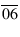
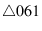
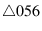
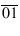
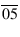
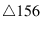
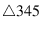

Next: Anisotropic Mesh Coarsening Up: Mesh Coarsening Previous: Selecting Vertices to Retain Contents
Incremental vertex deletion begins with an existing valid fine mesh and removes unwanted vertices one at a time, with a valid mesh after each deletion. This approach always results in a valid coarse mesh, even though it does not necessarily remove all unwanted vertices. In two dimensions, vertex deletion succeeds in removing all vertices for cases to date, although there is no proof of this property. In three dimensions, vertex deletion often leaves a few unwanted vertices in the coarse mesh, but always a small fraction of requested deletions.
The kernel of the incremental vertex deletion algorithm is an edge-contraction
algorithm for deleting a single vertex.6.2A vertex is removed by shrinking one of its incident edges to zero
length, as illustrated in two dimensions in Figure 6.2.
The left half of the figure shows a vertex 0 -- which
is to be removed from the mesh -- and its immediate neighbors
in the mesh. Vertex 0 will be removed by sliding it along the edge     
The incremental deletion algorithm makes multiple passes through the mesh, continuing until a pass removes no vertices or until all vertices selected for deletion have been removed. Between passes, local reconnection and smoothing are applied to improve the poorest-quality regions of the mesh and facilitate further vertex removal. During each pass, for each vertex marked for deletion in the coarse mesh, an edge is selected for contraction based on the following criteria:

) with a negative area.
. If edge contraction would form too poor a cell in three dimensions, the vertex is not removed; often the same vertex can be successfully removed in a subsequent pass through the mesh. This cutoff is unnecessary in two dimensions.
After the incremental deletion algorithm has made a complete pass through the mesh, local reconnection is used to improve mesh connectivity, and therefore the effectiveness of edge contraction in the next pass. In this context, we reconnect the mesh using both face and edge swapping and perform one pass of optimization-based smoothing with a floating threshold [3]. Both mesh optimization techniques have the goal of maximizing the minimum sine of angles.
After all vertex removal is complete, we do additional post-processing to improve coarse mesh quality. In two dimensions, we use five passes of optimization-based smoothing with a floating threshold, using the maxmin sine criterion. After the third pass, we use a single pass of mesh reconnection. In three dimensions, we again use a combination of smoothing and swapping, beginning with two passes of optimization-based smoothing with a floating threshold, followed by application of heuristics aimed at removing the worst cells in the mesh by using face and edge swapping, and finishing with two more passes of smoothing. Our post-processing regimen for three-dimensional meshes is consistent with the experimentally-inspired recommendations of Freitag and Ollivier-Gooch [3]. Post-processing improves the smallest angle in the output mesh significantly and cost is quite modest, at less than 10% of CPU time in two dimensions and far less than that in three dimensions.